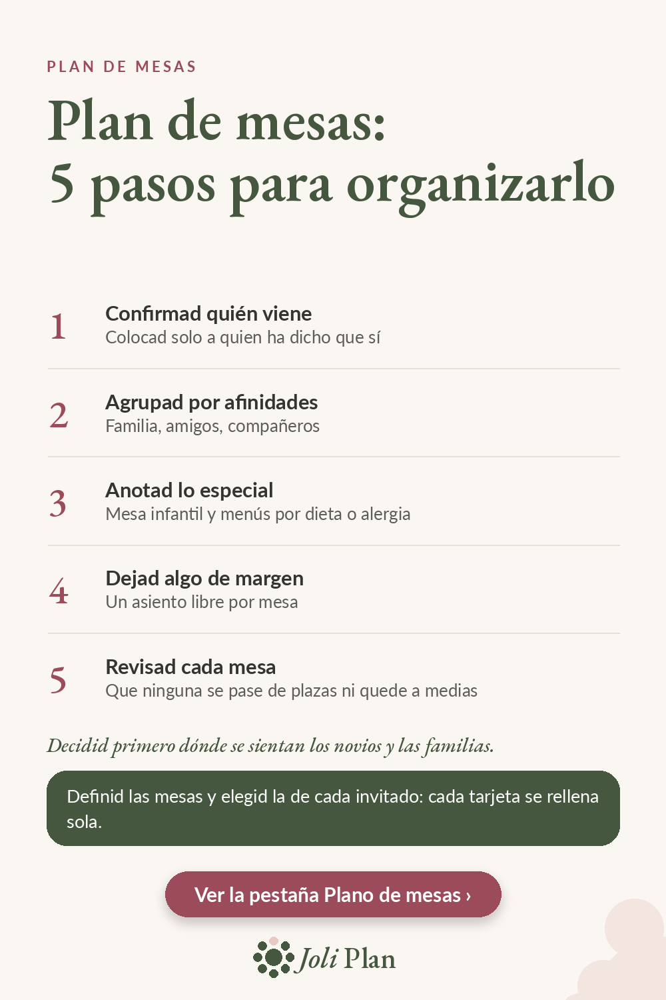

Invitados
Plan de mesas de boda: 5 pasos para organizarlo
El plan de mesas parece un rompecabezas, pero se resuelve con un orden claro. Estos son los cinco pasos, uno detrás de otro.

Los 5 pasos
- Confirmad quién viene. Colocad solo a quien ha dicho que sí.
- Agrupad por afinidades. Familia, amigos, compañeros.
- Anotad lo especial. Mesa infantil y menús por dieta o alergia.
- Dejad algo de margen. Un asiento libre por mesa.
- Revisad cada mesa. Que ninguna se pase de plazas ni quede a medias.
Antes de empezar
Decidid primero dónde se sientan los novios y las familias. Todo lo demás se organiza alrededor de esas mesas.
Trabajad siempre con la lista de confirmados, no con la de invitados. Así evitáis colocar a quien al final no viene.
Por qué dejar un asiento libre
Un asiento libre por mesa os da margen para un cambio de última hora: una persona que se suma o una mesa que necesita reajustarse. Sin ese margen, un solo cambio obliga a mover a muchas personas.